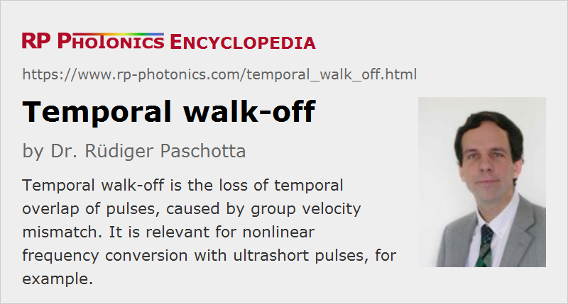

Temporal Walk-off
Definition: the loss of temporal overlap of pulses, caused by group velocity mismatch
Opposite term: spatial walk-off
German: zeitliches Weglaufen
How to cite the article; suggest additional literature
Author: Dr. Rüdiger Paschotta
Nonlinear frequency conversion works well with ultrashort pulses, because these can have high peak intensities even when the average optical powers are small. However, the useful interaction length in a nonlinear crystal can be limited by the so-called temporal walk-off: as the pulses with different frequencies have different group velocities, they lose their temporal overlap after some propagation distance. This effect limits the conversion efficiency and, if the temporal walk-off within the crystal length is significant, it can also lead to modified pulse shapes.
In the example case in Figure 1, 100-fs pulses (dashed curve) are sent into a frequency doubler with an overall temporal walk-off of 1 ps. For a low nonlinear conversion efficiency, this would result in a nearly rectangular temporal profile of the second-harmonic pulse, but due to the partial conversion this profile becomes asymmetric (green curve).
In other situations, the effect of the group velocity mismatch can be completely different – even pulse compression can occur. For example, there are aperiodically poled nonlinear crystal devices (→ periodic poling) where the temporal walk-off is exploited to achieve certain functions, such as efficient conversion of short pulses, or the splitting into multiple pulses.
Temporal walk-off can be very significant even in cases where pulse broadening caused by chromatic dispersion is negligibly weak. This is because dispersive broadening is determined only by group velocity variations within the pulse spectrum, whereas the temporal walk-off is determined by the group velocity mismatch between possibly distant spectral regions. For typical nonlinear crystal materials and wavelength differences of hundreds of nanometers, the group velocity mismatch normally amounts to some tens or hundreds of femtoseconds per millimeter. The total temporal walk-off can thus amount to a few picoseconds within a few centimeters of crystal material. For that reason, femtosecond parametric devices normally use nonlinear crystals with a length of only a few millimeters.
The frequency-domain counterpart of temporal walk-off is the effect of limited phase-matching bandwidth.
Note that temporal walk-off should not be confused with the totally different phenomenon of spatial walk-off.
Questions and Comments from Users
Here you can submit questions and comments. As far as they get accepted by the author, they will appear above this paragraph together with the author’s answer. The author will decide on acceptance based on certain criteria. Essentially, the issue must be of sufficiently broad interest.
Please do not enter personal data here; we would otherwise delete it soon. (See also our privacy declaration.) If you wish to receive personal feedback or consultancy from the author, please contact him e.g. via e-mail.
By submitting the information, you give your consent to the potential publication of your inputs on our website according to our rules. (If you later retract your consent, we will delete those inputs.) As your inputs are first reviewed by the author, they may be published with some delay.
See also: group velocity mismatch, phase-matching bandwidth, nonlinear frequency conversion, spatial walk-off, The Photonics Spotlight 2007-11-19
and other articles in the category nonlinear optics
|  |
If you like this page, please share the link with your friends and colleagues, e.g. via social media:
These sharing buttons are implemented in a privacy-friendly way!